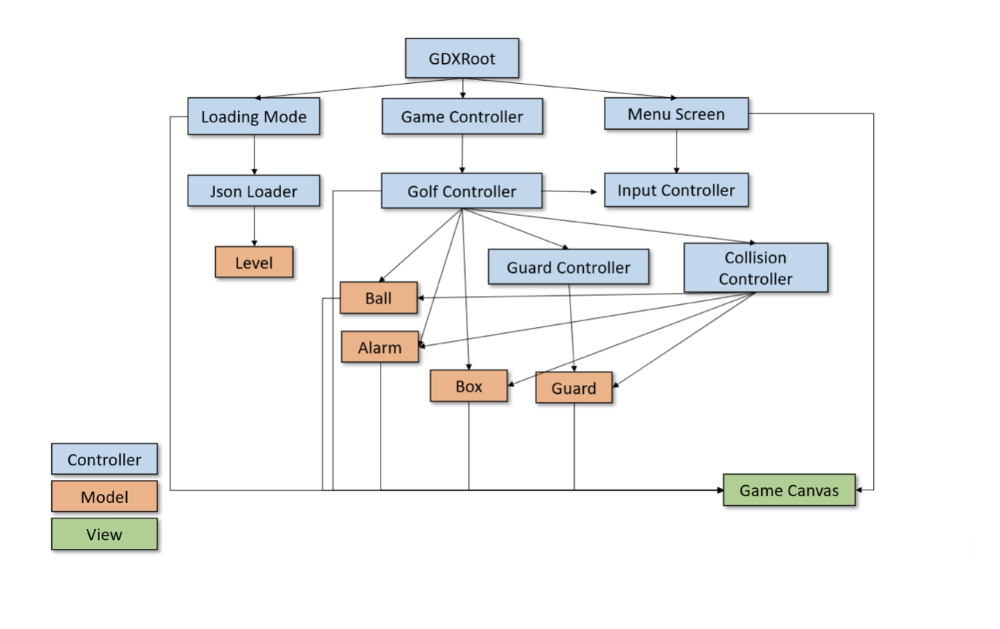
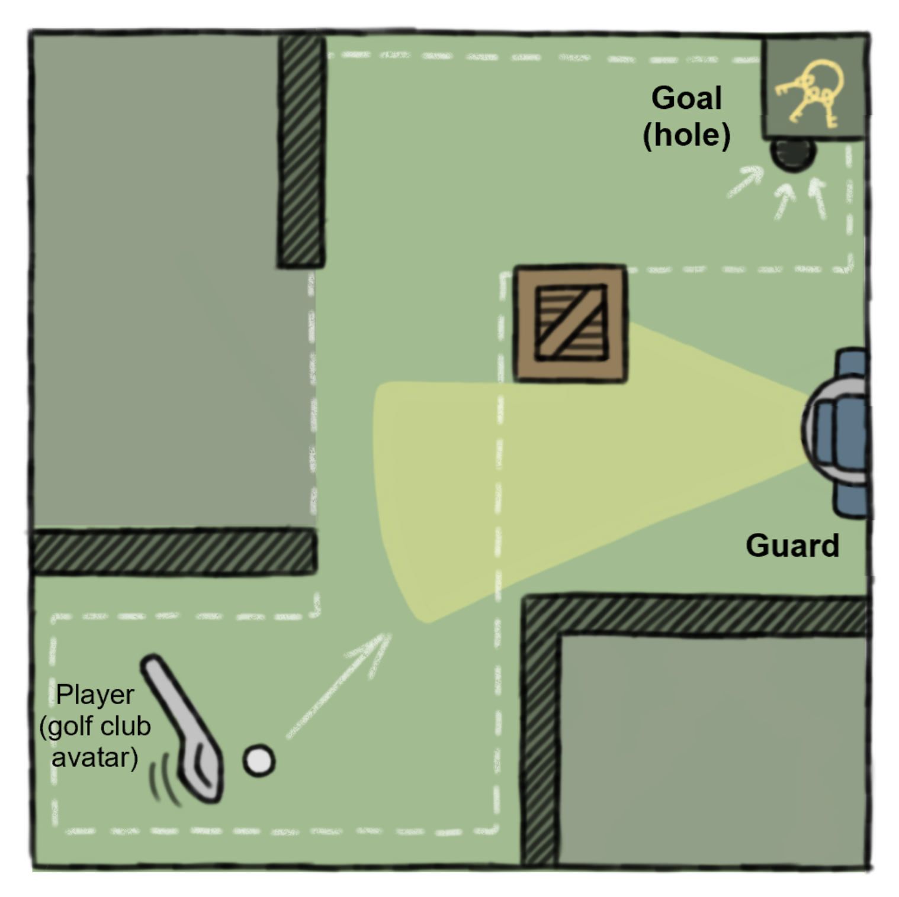
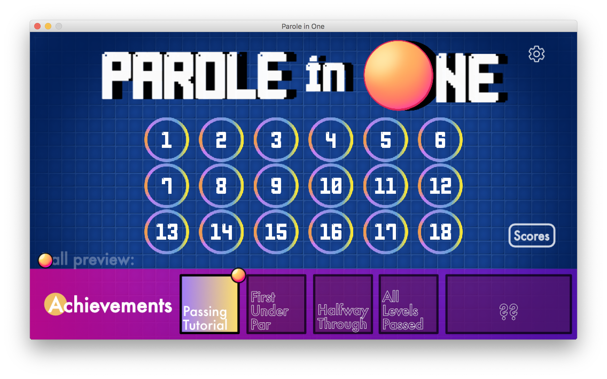
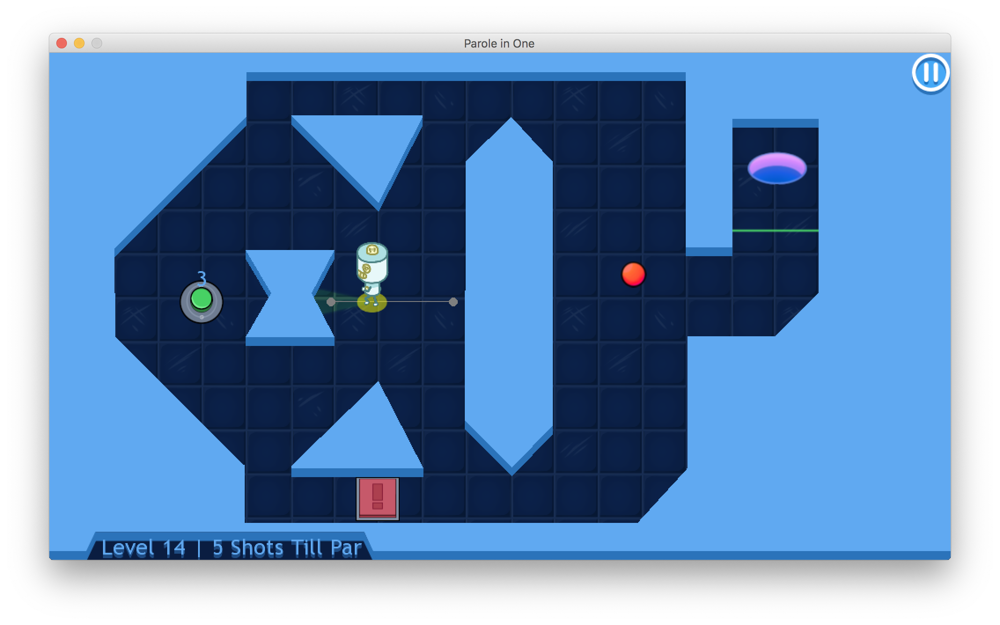

CS3152 游戏架构与开发是一节需要经过申请，通过率1/3的一节很酷的选修课。这学期我在我们8人小组中负责开发与交互设计。
歪果仁们脑洞大开，非得想在监狱设定下玩高尔夫……
那就陪他们玩吧！我们组越做越开心。第一次在这么一个大组里编代码，真的花了很多时间沟通交流讨论问题。“专业”是我们教授对我们的要求，老师希望我们像一份工作对待这份课程，所以我们开会的时候都在努力尊重每一个人的想法，用投票来解决争议，还自己起草了各种合约，每周还要在短暂(而又漫长的)会议里抓紧确认分工……

图：游戏开发框架/图片版权归Midway组的所有人
组里面算上我有5个开发者，而且每个人每周贡献20+小时，所以历史上很多组在学期结束之后直接把游戏送到了游戏展里。大家都摸爬滚打被教授批评改道赞赏，是一个进步曲线(被要求)非常显著的课。每周不是上交文档就是新的迭代产品，从纸和笔直到XBox手柄。
游戏的画面设计暂时还在概念阶段，简言之就是把高尔夫球打到终点而且不被警卫的聚光灯发现。我们还有一些游戏道具，比如闹铃和地道之类的。

图：游戏草图/图片版权归Midway组的所有人
——学期末更新——

最终尽管在疫情影响，我们还是跨着太平洋打Zoom打Discord完成了整个项目。
我们组的游戏非常幸运地得到了全班的最佳创意奖。
我一开始架构了我们主要的代码和各个Class，基本上methods都写好放在那里给大家填写，后来我们的Controller class还是直冲着3000行去了。项目难点便是合作时需要维护代码整洁，有需要完成非常多复杂的功能。如果从同在来，我会更苛刻地分开我们的Controller。
后期我主要是在编写UI，并直接输出了一些UI素材：按钮、悬浮、游戏数据显示、示例球、设置、所有的成就等等。设计改了又改，尤其是一开始没想到对色盲人士的友好度。大部分时候则是在处理鼠标的输入数据：是拖还是点击等等。

做游戏最快乐的恐怕是每次test的时候都可以玩上几局自己的游戏，甚至还会为自己着迷这个游戏感到莫名的自豪